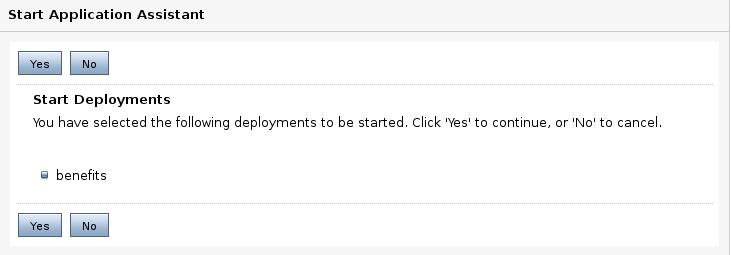

Despliegue de aplicaciones
Despliegue de una aplicación en un fichero war
Para desplegar una aplicación contenida en un fichero war se procede de la siguiente manera. Primero pinchamos la opción Deployments. Nos aparecerá una ventana como la siguiente en la cual se nos muestra las aplicaciones disponibles y se nos permite configurar nuevas. Vamos a pinchar en Install.
El primer paso es localizar el fichero que contendrá nuestra aplicación. Podemos hacer dos cosas. La primera es pinchar en upload your file, la cual nos permite cargar un fichero. La otra opción es pinchar en localhost y movernos por los directorios de nuestro sistema hasta encontrar el fichero a cargar.
Cuando encontremos el fichero, simplemente debemos seleccionarlo y pinchar en Next.
La siguiente opción nos indica que tenemos que indicar si es una aplicación o bien una librería que podrá ser usada por otras aplicaciones. Pinchamos en Next
Ahora nos indica en qué servidor o servidores queremos desplegar nuestra aplicación. Seleccionamos los servidores (deben estar en ejecución) y pinchamos en Next.
Ahora se nos permite configurar una serie de opciones (mostradas en la siguiente figura). Lo primero es cómo queremos que se llame la aplicación dentro del sistema. Lo siguiente son opciones de seguridad: si queremos que se use la información contenida en el descriptor de la aplicación, configurar nosotros la política de privacidad. El último grupo de opciones indican dónde van a quedar los fuentes (el fichero .war) situados.
Hemos llegado a las últimas opciones (ver la siguiente figura) donde le podemos decir que nos lleve a la ventana de configuración de los despliegues. Seleccionamos esta opción y pinchamos en Finish.
Hemos pasado a la siguiente ventana, a la que podemos llegar desde la opción de Deployments, donde ya nos tiene que aparecer la aplicación recién desplegada. En esta primera opción podemos modificar el orden de despliegue (Deployment order). Esta opción nos permite configurar cuándo queremos que se despliegue una aplicación. Si nuestro sistema tiene varias aplicaciones y queremos que una de ellas se despliegue antes que otra (debido a que la segunda necesita algún elemento de la primera), simplemente le damos un valor de orden menor a la primera.
La solapa Configuration ->General nos permite visualizar y modificar parte del contenido del descriptor de la aplicación.
La solapa Configuration ->Logging permite definir qué información se genera de la aplicación (fichero log) y de qué forma se guarda.
La solapa de seguridad la veremos más adelante. La solapa Targets permite modificar los servidores o cluster donde se despliega esta aplicación.
Pasamos a Control, donde podemos poner en marcha o parar una aplicación. Tenemos los botones de Start y Stop. Dentro del primero podemos arrancar la aplicación para que responda a todas las peticiones o sólo a las administrativas (para configurar la aplicación). En la opción de parar, podemos elegir entre parar cuando el trabajo de la aplicación termine, forzar la parada ahora o parar al servidor pero permitir conexiones de administración.
Si pinchamos en Start nos pedirá confirmación de lo que queremos hacer (siguiente figura).

La opción de Testing permite probar la aplicación. Si nos fijamos, nos está diciendo la url asociada a la aplicación, incluso su página principal.
La aplicación desplegada responde en el servidor adminserver. Tenemos que poner el puerto de escucha.
Por último, la solapa de Monitoring nos permite monitorizar el estado de la aplicación, indicándonos, entre otros, los servlets que contiene la aplicación o el número de sesiones abiertas.
Siguiendo con las opciones de monitorizado, Servlets nos permite echar un vistazo a los servlets de la aplicación, su tiempo de respuesta, etc.
También se puede monitorizar las sesiones.
Despliegue de una aplicación en un directorio
Si tenemos una aplicación en un directorio, podemos desplegarla directamente. Lo que hace WebLogic es copiarla a un directorio de despliegue. Cualquier modificación que hagamos en el directorio original no se verá reflejada en la aplicación. La aplicación sin comprimir la podemos dejar en cualquier directorio del sistema. Seguimos los mismos pasos que para una aplicación en un fichero: creamos una nueva aplicación y buscamos el directorio donde tenemos la aplicación. Nos aparecerá un icono distinto a la aplicación desplegada como fichero comprimido.
Sin embargo, algunas veces es necesario tener desplegada la aplicación e ir modificando el fichero de descripción u otras partes de la aplicación. Esto lo podemos hacer en modo desarrollo. Existe un directorio, dentro del dominio, llamado autodeploy. En este directorio, cualquier aplicación, tanto en fichero comprimido como en directorio, que copiemos aparecerá en la lista de aplicaciones desplegadas. Si nos fijamos en la lista de aplicaciones de la siguiente figura veremos que indica que la aplicación ha sido autodeployed.

Manejo y despliegue con Workshop for Weblogic
El Workshop es un conjunto de plugins para Eclipse que permiten una integración completa con Weblogic. Para empezar a trabajar con él, lo arrancamos desde Bea Products->Workshop for Weblogic Platform. Podemos crear un nuevo proyecto con las configuraciones necesarias según el tipo de aplicación a realizar: servicio web, aplicación web, EJB, etc.
Si pinchamos con el botón derecho en un proyecto y le decimos Run as... nos aparecerá una ventana como la mostrada en la siguiente figura. En ella podemos elegir entre ejecutar la aplicación del proyecto actual en un servidor existente o bien crear un nuevo servidor (Apache o Weblogic). Dentro de Weblogic nos permite incluso buscar otras versiones instaladas.
A continuación nos permite elegir un dominio ya definido o bien crear un nuevo dominio (simplemente, llama a la aplicación de Weblogic para crear el dominio).
Después se nos permite elegir qué aplicaciones tienen que ejecutarse en este servidor.
En la parte inferior, nos aparece una solapa, Servers, que nos permite arrancar y/o parar servidores y desplegar, redesplegar o parar aplicaciones.
Al crear un nuevo proyecto, Workshop incluye las librerías necesarias para funcionar dentro de Weblogic. Si tenemos una aplicación que corre en otro servidor y queremos pasarla a Weblogic usando Workshop, sólo tendremos que copiar las clases .java y los ficheros de configuración y de presentación (html, jsp, etc.).